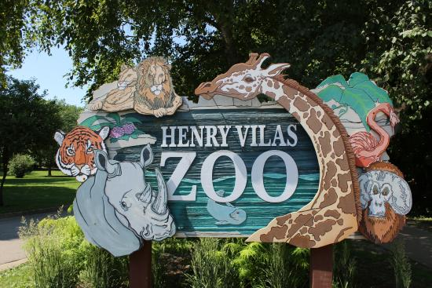
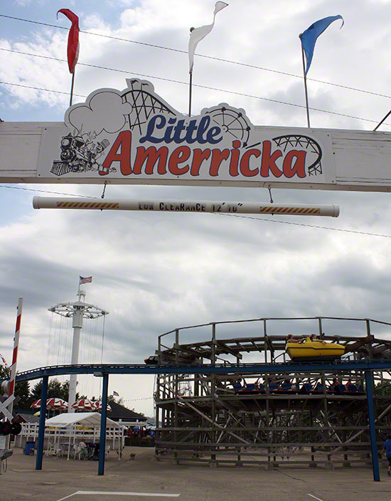
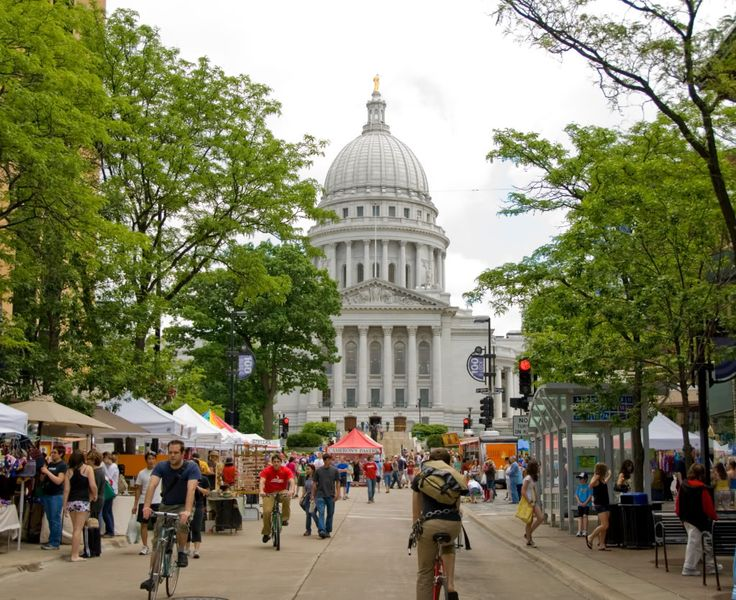
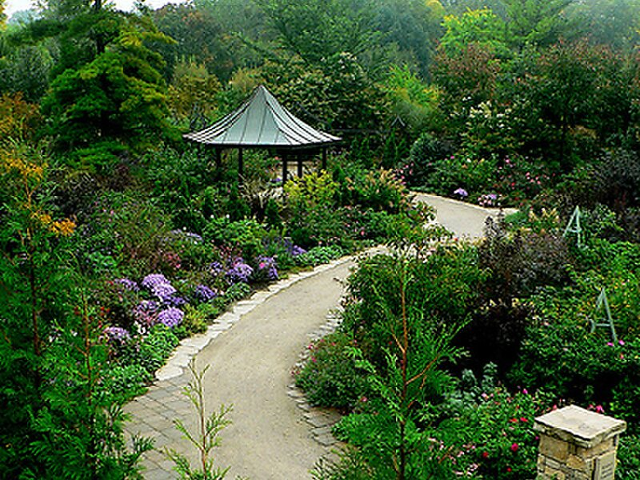

Madison is the capital of the U.S. state of Wisconsin and the seat of Dane County. As of the 2020 census the population was 269,840 which made it the second-largest city in Wisconsin by population, after Milwaukee, and the 80th-largest in the United States.
Henry Vilas Zoo is a 28-acre public zoo in Madison, Wisconsin, United States, that is accredited by the Association of Zoos and Aquariums. Owned by Dane County, the zoo charges no admission or parking fees. It receives over 750,000 visitors annually.
Little Amerricka features twenty-six rides and attractions including our classic 1950's Wooden Roller Coaster The Meteor. Our unique park features restored rides from classic amusement parks of a bygone era.
The Dane County Farmers' Market is America's largest producers-only farmers' market. It is held from April to November on Saturday mornings on the Capitol Square in Madison, Wisconsin.
Olbrich's outdoor gardens feature 16 acres of stunning landscapes and Midwest-hardy plants. Free & open daily. Visit the tropical Bolz Conservatory, filled with exotic plants, orchids, birds, and a waterfall. $6 admission; free for Members. Free to all on Wed. & Sat., 10 am-noon.
